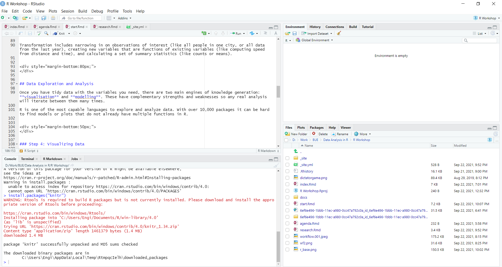

GETTING STARTED
What is R?
R is a language and environment for statistical computing and graphics. R provides a wide variety of statistical (linear and nonlinear modeling, classical statistical tests, time-series analysis, classification, clustering, …) and graphical techniques, and is highly extensible.
Nearly everything you may need in terms of statistics has already been programmed and made available in R (either as part of the main package or as a user-contributed package).
With R you can write functions, do calculations, apply most available statistical techniques, create simple or complicated graphs, and even write your own library functions.
The Data Analysis Workflow
Data analysis is a term that describes the process of turning raw data into knowledge. This involves data wrangling, data exploration and analysis, and finally communicating the findings.
Data Wrangling
](images/wf2.png)
Before we can do any kind of analysis we need to be able to collect our data and prepare it. This is the most time consuming part of any data analysis project!
Step 1: Importing Data
When it comes to importing data from multiple sources and of multiple formats, R is very powerful.
R can grab data from many sources including: * Spreadsheets and documents: .csv, .txt. .xls, etc… * Statistical software: SPSS, SAS, Stata * Web Scraping * Databases: MySQL, Orancel, etc…
Step 2: Tidying Data
Tidying your data means storing it in a consistent form that matches the semantics of the dataset with the way it is stored. In brief, when your data is tidy, each column is a variable, and each row is an observation.
Tidy data is important because the consistent structure lets you focus your struggle on questions about the data, not fighting to get the data into the right form for different functions.
Step 3: Transforming Data
Once we have data into R and begin to tidy the data we usually need to transform multiple aspects of the data.
Transformation includes narrowing in on observations of interest (like all people in one city, or all data from the last year), creating new variables that are functions of existing variables (like computing speed from distance and time), and calculating a set of summary statistics (like counts or means).
Data Exploration and Analysis
Once you have tidy data with the variables you need, there are two main engines of knowledge generation: visualisation and modelling. These have complementary strengths and weaknesses so any real analysis will iterate between them many times.
R is one of the most capable languages to explore and analyze data. With over 10,000 packages it can be hard to find models or plots that do not already have multiple functions in R.
Step 4: Visualizing Data
Visualisation is a fundamentally human activity. A good visualisation will show you things that you did not expect, or raise new questions about the data. A good visualisation might also hint that you’re asking the wrong question, or you need to collect different data. Visualisations can surprise you!
There are multiple ways to vizualize data in R. The base graphics are easy to use and outperform Stata, SAS and SPSS. In this workshop we will be using the ggplot2 package.
Step 5: Modelling Data
Models are complementary tools to visualisation. Once you have made your questions sufficiently precise, you can use a model to answer them. Models are a fundamentally mathematical or computational tool, so they generally scale well. But every model makes assumptions, and by its very nature a model cannot question its own assumptions.
R can handle anything from simple t-tests to extensive machine learning algorithms on big data.
Communication
The last step of data science is communication, an absolutely critical part of any data analysis project. It doesn’t matter how well your models and visualisation have led you to understand the data unless you can also communicate your results to others.
Step 6: Communicating Findings
In this workshop, we won’t be tacking how to communicate results using R but here are some tools for your reference:
R connects easily to:
- Github
- RPubs
- RStudio Connect which can be used to publish findings.
shinyprovides an interactive data visualization and javascript environment.plotlyallows for interactive graphics for webpages.R Markdowncan be used to make webpages, books, slides, and many other documents.
Getting R and RStudio
R is available for free download and installation at: https://cran.r-project.org/
RStudio is available for free download and installation at: https://www.rstudio.com/products/rstudio/download/
Ways to use R
1. Base R
When you install R you will see what is called base R.
R Console
The R console is the window on the left. You can type R code into this and then it runs and returns the output in the same window. You must be mindful because this does not save your work and does not provide any helpful tools.
R Script
The R Script is the window on the right. If you are used to Stata you can think of this as a do file. This is where we write the code and could save it.
2. RStudio
RStudio is a software that provides an nifty interface to R. It’s sometimes referred to as an Integrated Development Environment (IDE). Its purpose is to improve your experience with the R software. RStudio cannot run without R being installed on your computer.

R Source Window
](images/rstudio_sess_1.png)
The source window is equivalent to the script window in base R. It can be also used to create notebooks and other document formats.
R Environment
](images/rstudio_sess_2.png)
The environment window is where you can see a list of all available data and functions. On top of this the environment window also has tabs for:
- History: Displays all previous code run in the console.
- Spark: You can integrate RStudio with a Apache Spark installation to work with large data.
- Git: You can use github for a version control.
R Console
](images/rstudio_sess_3.png)
Equivalent to the console in Base R. This window will also display results from your R Markdown documents when you create html, pdf or other documents.
Other Tools Pane
](images/rstudio_sess_4.png)
The final pane in the RStudio window is used to preview files, plots, installed packages, R help and a viewer to view local web content.
This can allow for easy access to your files. On top of this you can see previews of plots and documents that you are creating. This also has a built in help window. In base R when you search for help it takes you out of R and to a web-browser. In RStudio you can have the help right next to the code you are writing.